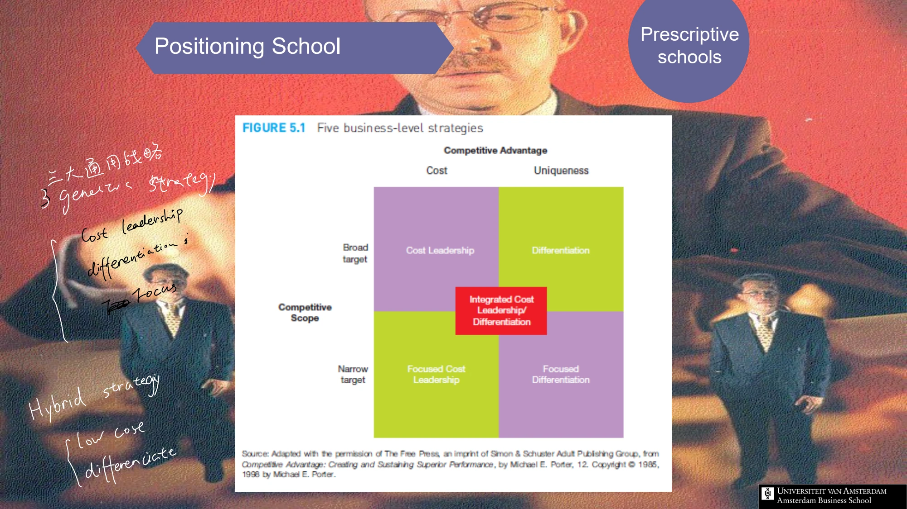

The framework
| Position | Competitive scope | Supporting logic |
|---|---|---|
| Cost leadership | Broad target | An activity system that achieves a lower cost position across the target market. |
| Differentiation | Broad target | Features, quality, service or other valued attributes that customers perceive as distinctive. |
| Focused cost leadership | Narrow target | A cost advantage in a particular segment rather than across the whole market. |
| Focused differentiation | Narrow target | A distinctive offer designed around a specific segment's priorities. |
| Integrated / hybrid position | Combines elements | A coherent system that can support both attractive customer value and cost efficiency. |
Key distinctions
Cost is not the same as price
A low selling price is a market-facing choice. A low cost position concerns how economically the organization can perform the activities required to deliver its offer. The course's diagnostic questions compare scale and production efficiency with new features, product performance and complementary services.
Two versions in the course
Session 1 includes integrated cost leadership/differentiation as a possible strategy. Session 3's comparison diagram places hybrid positioning beside the warning 'stuck in the middle'. Read the tension rather than treating either label as a universal verdict: the question is whether the activities genuinely support the claimed combination.
How to use it
- Specify the breadth of the intended customer group.
- Identify the main basis on which the offer wins against alternatives.
- Trace the resources and activities required to sustain that position.
Keep in mind
Claiming both low cost and differentiation is not evidence of a successful hybrid. Verify the operating logic and trade-offs.
What are the two axes?
Reveal the explanation
Competitive scope and the source of competitive advantage.
Read the classroom original
Complete pages from the supplied lecture slides. Select a page to read, enlarge or browse its extracted text. Page numbers refer to the PDF’s physical page order.
